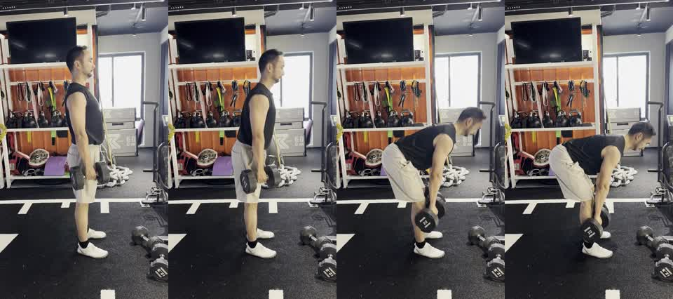

髋铰链关键画面

报告应先判断动作是不是由髋部后移主导，而不是膝盖弯曲下蹲。膝盖保持微屈是合理的，不应要求完全锁死。
这个动作真正的安全重点在底部：如果为了下得更低而让腰背位置变差，就应该缩短行程，而不是继续追深度。
下次口令：髋向后，哑铃贴腿，背保持长；底部到背还能保持的位置就够。
这段视频用于测试小鱼教练能否区分髋铰链动作和深蹲模式。报告应重点看髋部是否向后移动、膝盖是否保持微屈、哑铃是否贴近腿部、底部腰背是否保持延展。
正侧方机位很适合判断髋铰链和底部行程，但不适合高置信度判断左右重心偏移。报告应该清楚说明这一点。
| 安全项 | 优先级 | 本次判断 | 处理建议 |
|---|---|---|---|
| 底部腰背位置 | 🟡 | 报告必须检查底部是否为了追求更低位置而牺牲背部延展。 | 如果底部腰背位置变差，先缩短下放行程，不急加重量。 |
| 髋铰链主导 | 🟢 | 示例应被识别为髋主导动作，而不是膝主导深蹲。 | 提示髋部向后找墙，膝盖保持微屈但不锁死。 |
| 哑铃路径 | 🟢 | 侧面机位适合看哑铃是否贴近腿部。 | 哑铃贴腿走，别往前飘。 |
| 动作 | 代表画面 | 报告应覆盖 | 不应过度判断 |
|---|---|---|---|
| 哑铃 RDL / 微屈膝直腿硬拉 | preview_contact_sheet.jpg | 髋后移、微屈膝、背部延展、底部行程、哑铃路径 | 从纯侧面强行判断左右重心偏移 |

报告应先判断动作是不是由髋部后移主导，而不是膝盖弯曲下蹲。膝盖保持微屈是合理的，不应要求完全锁死。
这个动作真正的安全重点在底部：如果为了下得更低而让腰背位置变差，就应该缩短行程，而不是继续追深度。
This sample should produce a hip-hinge assessment focused on hips moving back, soft knees, back position, bottom-range control, and dumbbell path.
The report should not call this a squat or require locked knees. It should recommend a front-oblique view only when left-right weight shift or stance symmetry needs review.